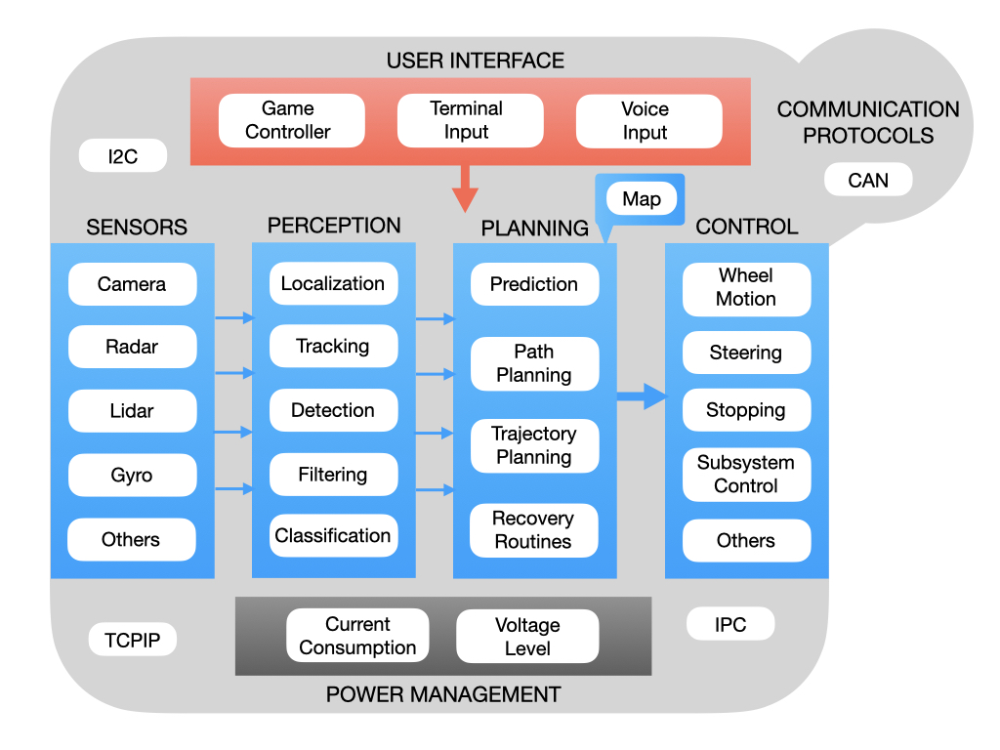
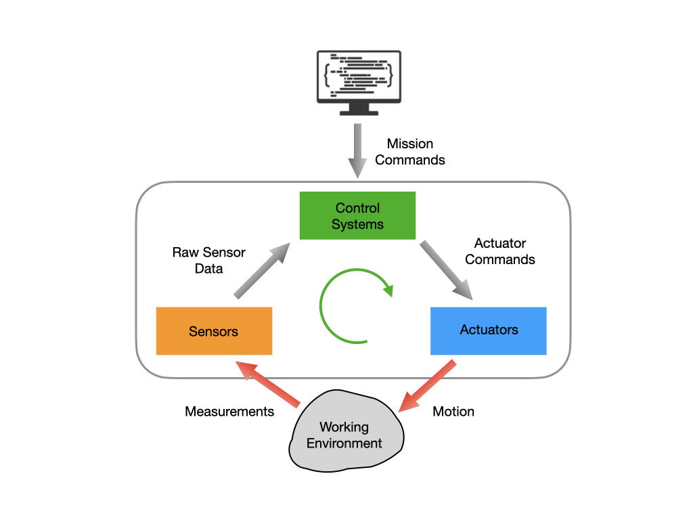
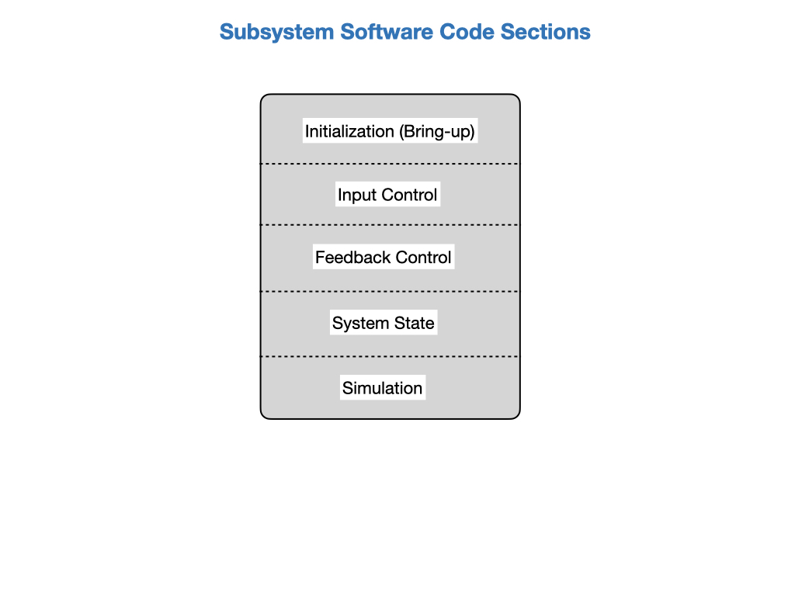
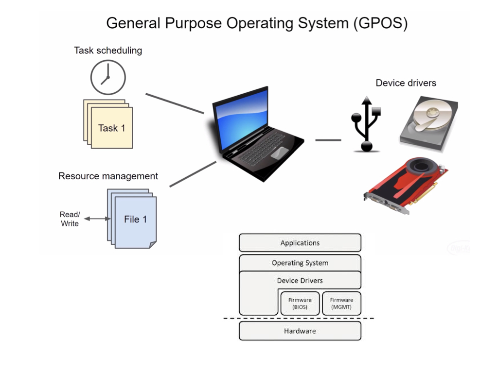
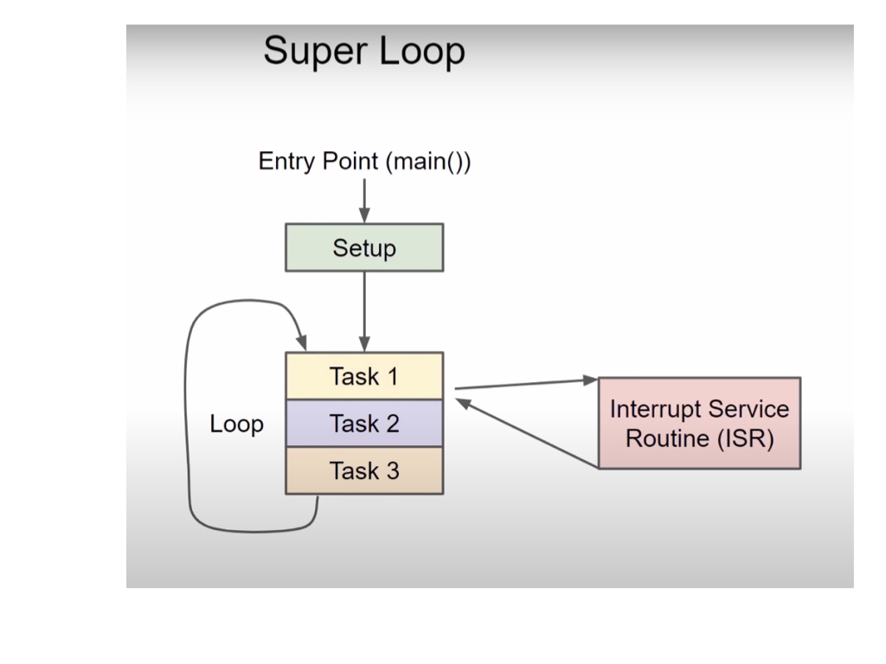
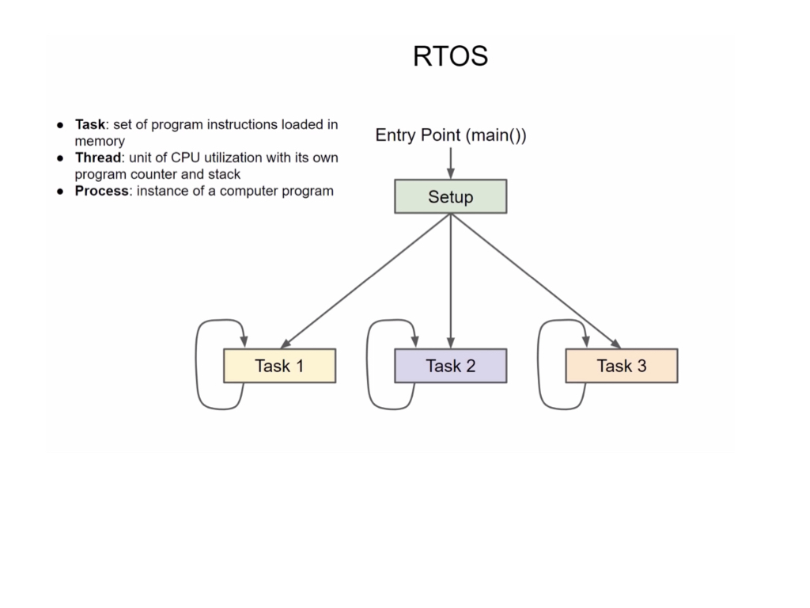

Control Algorithms
Members of the programming team are primarily tasked with writing algorithms that control the robot. This is the most heavily researched areas of robotics with a high demand of skilled programmers, especially those who understand robotic systems. To get an understanding of robot programming it’s helpfull to try and categorize the algorithms into their functional areas.
A robot receives input from two sources; a user interface that sends it commands, and the sensors that perceive the environment around it. Once the input is received the robot has to plan an action to perform and send control signals to it’s actuators to carry out that action. Input coming in from sensors must first be passed through the perception stack before it goes onto the planning algorithms. This is because sensors produce very large amounts of raw data that is coming in at a fast rate. The robot has to make sense of that data in order to determine its state. The power management stack monitors the battery status and current draw of the system.
A critical piece of information that a robot would get from its sensors is “Where am I?” and “What is my orientation?” the representation of this in robotics is called a Pose. The process of determining the robots’ Pose is called Localization. As the robot moves is needs to ensure that is Tracking on its intended path. Localization and tracking are the primary components that represent the robots’ state.
The perception algorithms can get vast amounts of raw data coming in from its sensors much of which may not be useful for determining its state. The raw sensor data may need to be passed through Filtering routines to extract the pertinent information. Filtering is used to remove noise from the system and limit the rate of the data flow among other things. Another critical component of the perception stack is to detect objects and classify them in a meaningful way.
Prediction takes in past and current information and predicts what will happen in the future. This is done using Kalman Filters, which is a large subject area. There is more infomation about Kalman Filters and filters in general in the WPI Documentation. Path Planning and Trajectory Planning is concerned with getting the robot from where it is now to where it needs to be. A path is a set of waypoints from one location to another whereas a trajectory indicates the time at which the robot should reach each waypoint and the velocity at which it should be travelling. Similar to the real world, the robot may use a map to assist the path planning process. There may also be a set of Recovery Routines in order to account for unexpected situations that the robot may encounter on the way to its goal.
Finally, in order for the robot to communicate with a User Interface, and for the onboard devices to communicate with each other, there are a number of Networking Protocols that programmers will need to understand. In First Robotics, the primary networking protocol between devices is CAN.

Robot Software Design
Robots generally implement the following design pattern where it receives external commands to control actuators that interact with the physical world. They use sensors to provide feedback, or system state, that helps direct them towards their goal.

The software code should be organized to reflect this design pattern. All subsystems need to be initialized, a process sometimes referred to as Bring-up. The Initialization section will include the subsystem’s class constructor. The code can be further sectioned into Input Control, Feedback Control, and System State to implement the design pattern. Note that not all subsystems will include all of these sections. For instance, an IMU may only include the Bring-up and System State sections. During the testing phase, prior to getting a physical robot, there’s a lot of reliance on simulation, which can be provided its own section.

Real Time Operating Systems (RTOS)
General Purpose Operating Systems
A general-purpose operating system (GPOS) is designed to run a wide variety of applications and handle numerous tasks on a single computing device. These versatile operating systems, such as Microsoft Windows, macOS, and various Linux distributions, manage the computer’s resources like the CPU, memory, and storage to serve the diverse needs of different users and software. Unlike specialized systems, a GPOS offers flexibility, allowing users to switch between applications and perform multiple tasks simultaneously. Key Characteristics of a General-Purpose Operating System
Versatility: GPOS can run many different types of software, from web browsers and office suites to games and creative tools.
Resource Management: It manages hardware resources, such as the CPU and memory, to ensure that multiple applications can run efficiently without monopolizing the system’s power.
User Interface: A GPOS provides a user-friendly interface (often a graphical user interface or GUI) that allows users to interact with the computer and its applications easily.
Multitasking: It supports running multiple processes or applications at the same time, allowing users to perform various tasks concurrently.
Examples of General-Purpose Operating Systems
Microsoft Windows: Pre-installed on most personal computers, it is a popular choice for a broad range of applications.
macOS: The operating system for Apple Macintosh computers, known for its design and user experience.
Linux: An open-source operating system with many different distributions, offering high flexibility and customizability.
Android and iOS: While often considered distinct from desktop GPOS, these mobile operating systems also serve as general-purpose platforms for a wide range of mobile apps.

Microprocessor Operating Systems
A microprocessor operating system doesn’t exist as a standalone entity; instead, it refers to a standard operating system (like Windows, macOS, or Linux) running on a computer that uses a microprocessor (CPU) as its central processing unit. The operating system is the software that manages the microprocessor and all other hardware, providing a platform for applications and user interaction, while the microprocessor is the hardware component that executes the instructions from the OS and applications. Here’s a breakdown of the relationship:
Microprocessor (CPU): This is the brain of the computer, a single chip that performs arithmetic, logic, and control functions. It fetches instructions, decodes them, and executes them, essentially performing all the calculations and data processing.
Operating System (OS): This is the software that manages the microprocessor and other system resources. The OS performs tasks such as:
Resource Management: Allocating and sharing resources like memory and the CPU among multiple programs.
Task Scheduling: Starting, running, and terminating programs.
User Interface: Providing the environment for users to interact with the computer.
File Management: Organizing and storing files on disks.
Device Drivers: Managing the communication between software and hardware devices like the keyboard and screen.
Loading Programs: The boot process starts with small programs that direct the microprocessor to load parts of the OS from storage into memory, which the microprocessor then executes.
In essence: You can’t have a “microprocessor operating system.” You have a microprocessor (hardware) that runs an operating system (software), enabling it to handle complex tasks and serve as a platform for applications.

Real Time Operating System
A Real-Time Operating System (RTOS) is a specialized operating system designed to execute tasks with strict and predictable timing requirements, prioritizing deterministic, low-latency responses over general user experience. Unlike general-purpose operating systems (GPOS), an RTOS ensures that time-critical tasks are completed within their designated deadlines, making them essential for embedded systems in fields like automotive, aerospace, industrial automation, and medical devices.
Key Characteristics of an RTOS
Deterministic Behavior: RTOSes focus on predictable execution times for tasks, ensuring they complete within a defined timeframe.
Task Prioritization: Tasks are scheduled based on their deadlines and criticality, with high-priority tasks gaining precedence over lower-priority ones.
Low Latency: RTOSes guarantee quick responses to events and interrupts, a crucial feature for systems that require immediate action.
Minimal Overhead: RTOSes are often lightweight, with minimal background processes to conserve resources and maintain efficiency in resource-constrained embedded systems.
Memory Management: They provide efficient memory management and stack management to support the real-time nature of their applications.
How an RTOS Works
Scheduling: An RTOS scheduler manages tasks, placing them in states such as “ready,” “running,” or “blocked”.
Task States: Tasks transition through different states based on their need for resources or readiness to execute.
Kernel and Hardware Interaction: The core of the RTOS, the kernel, interacts directly with the hardware, managing resources and providing services to applications.
Hardware Abstraction: RTOSes often include Hardware Abstraction Layers (HALs) that simplify the use of hardware components like timers and communication buses, making development easier.
Common Applications
Automotive Systems: Controlling vehicle functions like braking or engine management. Aerospace: Managing critical flight control systems. Industrial Automation: Coordinating machinery and robotic arms in manufacturing plants. Medical Devices: Operating life-sustaining systems such as pacemakers. Telecommunications: Ensuring the timely delivery of data in communication networks.

References
Google Definitions of GPOS, Microprocessor, and real-time Operating Systems